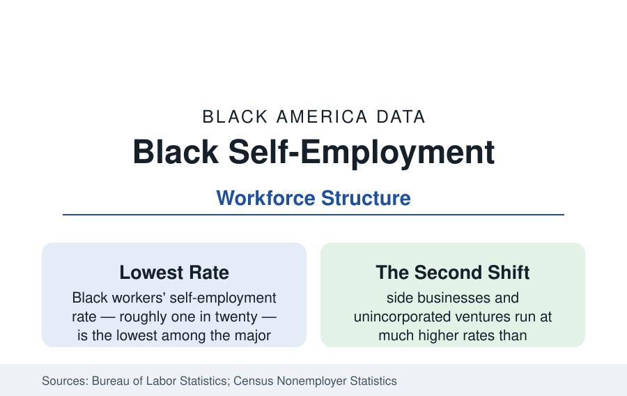

Black Employment
Black Self-Employment: The Solo Economy and the Second Shift
About one in twenty Black workers is self-employed — the lowest rate among major groups — while side businesses run at far higher rates. The CPS and survey data.

The self-employment rate is the workforce statistic that quietly contradicts the business headlines: roughly one in twenty Black workers is self-employed as a main job — the lowest rate among the major racial groups in the Current Population Survey — even as Black business formation (the business file's millions of nonemployer firms) surges. The reconciliation of those two facts is this article: the solo economy's structure, and the second shift that carries Black entrepreneurship alongside Black jobs.
The Rate and Its Composition
The CPS counts the structure: Black self-employment runs several points below the white rate (which sits near one in ten) and below the Latino and Asian rates, with the gap widest in the incorporated category (the self-employed with corporations — the higher-earning tier — showing the largest racial spread in the data) and narrowest in the unincorporated trades. The occupational composition differs by group in the classic pattern: white self-employment concentrates in construction contracting, professional practice, retail ownership, and farming; Black self-employment concentrates in personal services (the beauty economy's booth renters and independent stylists — statistically a self-employment army), transportation (the trucking profile's owner-operators and the rideshare file's drivers — though most gig drivers classify as employees of their main-job count or as side activity), health services (the care workforce's independent tier), and the repair and cleaning trades. The earnings data complete the picture: median self-employment income runs below wage employment's for Black workers in the CPS (the solo economy as supplement more than substitute), with the incorporated professional tail pulling the mean far above the median.
Why the Rate Runs Low: The Capital and Cushion Data
The research decomposition is consistent: self-employment entry in the data requires capital (the wealth profile's median — the startup funds of the formation file come overwhelmingly from savings and family, both thin), a risk cushion (the household income and spousal-benefits variables — a partner's employer health insurance is one of the strongest predictors of self-employment entry in the literature, and the coverage data's household structure prices it), an occupational base (the licensed trades and professions whose employees spin off — the construction and professional profiles' pipelines), and customer networks. Each input distributes against Black workers in the data of the other files, and the rate is their product. The counterfactual studies (the Kauffman and Fed analyses modeling entry at white wealth levels) assign the wealth gap the largest single share — the solo economy's entry fee is the reference's master variable, again.
The Second Shift: Side Business America
The headline rate understates the phenomenon because the CPS counts main jobs — and Black entrepreneurship's modal form is the second job. The surveys that ask directly (the Federal Reserve's household surveys and the platform data) find side-business activity at rates far above the self-employment headline: the stylist with a chair and a product line, the postal worker's catering company (the employment files' classic pairing), the nurse's home-care registry, the teacher's tutoring firm, the driver's weekend detailing — the nonemployer statistics' millions of firms at their median receipts (modest five figures and below) describing exactly this tier: real businesses, deliberately or necessarily part-time. The platform economy formalized the second shift (the gig profile's drivers and sellers), and the tax data's Schedule C counts give the phenomenon its official shadow — filers with both W-2 wages and business income, a population whose Black share exceeds the self-employment rate's by a wide margin in the IRS statistics studies.
Transitions: When the Side Becomes the Main
The longitudinal data follow the crossings: the side businesses that become main jobs (a minority of them in any cohort in the panel studies — the survival and graduation rates of the business file applied to persons), the triggers (layoff pushes versus opportunity pulls, the unemployment-spell startups of the recession cohorts posting the worst survival in the formation data), the role of the spouse's steady job in successful crossings (the household portfolio model — one partner's wages and benefits underwriting the other's venture, the family-structure data's economics in action), and the failure returns (the re-entry wage data for failed founders — the literature finding modest penalties, the experience partially compensated in subsequent employment). The retirement file's self-employment tail (the oldest workers' highest self-employment rates — the bridge business and the encore venture) closes the lifecycle.
Reading the Self-Employment Data
The one-in-twenty headline and the millions of firms are both true: Black America runs its businesses at night and on weekends, around the jobs the other profiles describe, because the capital data rarely permit the leap in one motion. The second shift is not a lesser entrepreneurship — it is the risk-managed form of it, invented by households whose balance sheets the wealth file explains. Count the Schedule Cs, and the solo economy's real size appears.
More in Black Employment
The Black Unemployment Rate: The Two-to-One Pattern
Black unemployment runs at roughly twice the White rate — 5.5 percent against 3.3 percent in annual averages — a ratio stable across five decades of federal data. How it is measured and why it persists.
Black Median Weekly Earnings: The 80-Cent Ratio
Black full-time workers earn a median of about $900 a week — roughly 80 cents for every dollar White workers earn. The BLS earnings data by group, gender, and occupation.
Black Labor Force Participation: Working at National Rates
Black labor force participation runs at roughly the national rate — and Black women participate at higher rates than White women. The BLS participation data.
Source: U.S. Bureau of Labor Statistics, Current Population Survey self-employment data; Census Bureau Nonemployer Statistics; Federal Reserve Small Business Credit Survey; Gallup and survey research on side businesses.